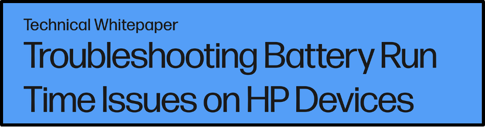

Battery Health White Paper
This ended up being my largest project I worked on while at HP. The document is a company-wide, public how-to
guide on battery health management strategies. In a way, it is a culmination of my professional experiences
and achievements put into one document and stands as a permanent guide when users purchase a new device.
Click Battery Health White Paper
to download a PDF copy (1.4 MB).